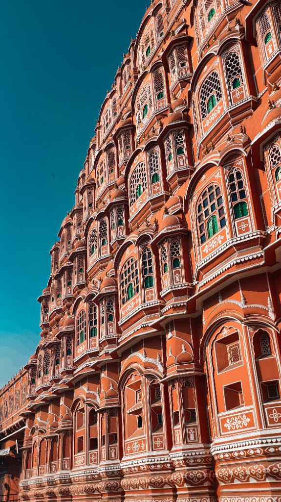
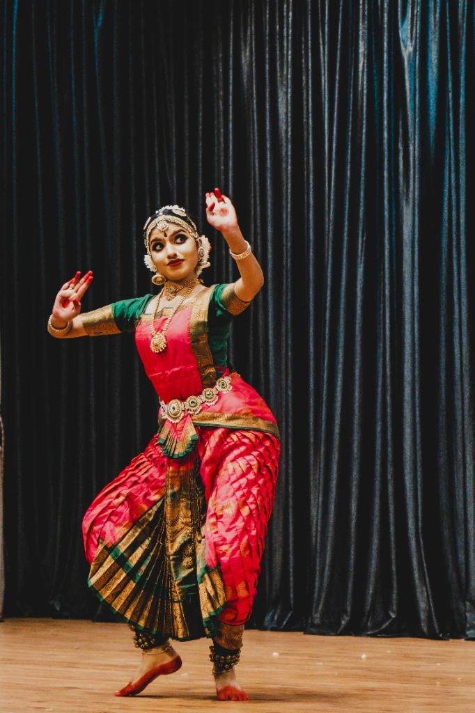
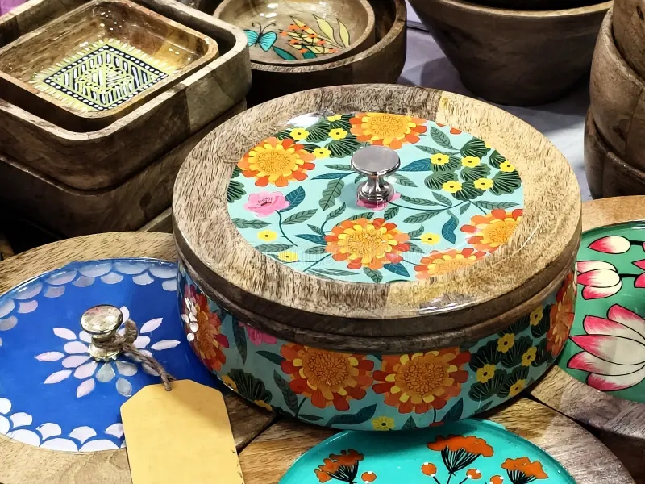
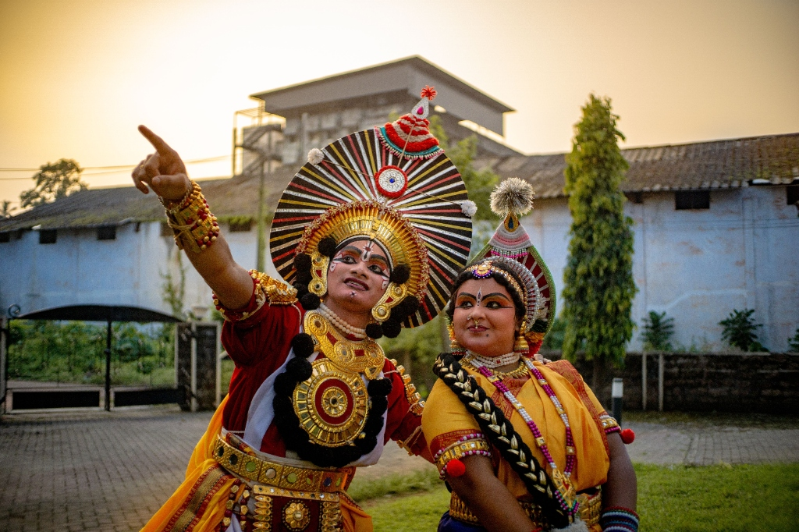
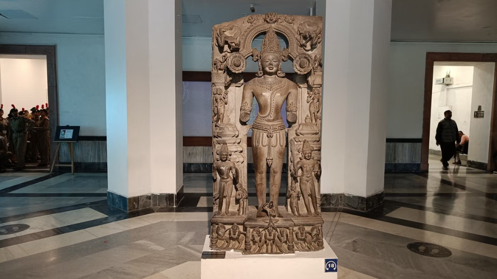

Explore Cultural Domains
Comprehensive archival classification of India's living traditions, monuments, performing arts, textiles, and indigenous knowledge systems across all 36 regions.

ArchitectureMonuments & UNESCO Sites
Fortresses, rock-cut caves, royal palaces, and imperial mausoleums across all 28 states and 8 union territories.
 Living Rituals
Living Rituals
Festivals & Seasonal Fairs
Durga Puja, Onam, Hornbill, Garba, Pushkar camel fair, and sacred seasonal harvest rituals.
 Handloom
Handloom
Textiles & Master Handlooms
Kanchipuram silks, Banarasi brocades, royal Pashmina cashmere, and indigenous tribal weaves.
 Gastronomy
Gastronomy
Flavours of India
Hyderabadi biryani, Kerala Sadya, Dal Baati Churma, temple prashad, and royal feast recipes.

Performing ArtsDance & Performing Arts
Bharatanatyam, Kathakali, Odissi mudras, Bhangra drumming, and classical Carnatic raga systems.

CraftsmanshipMaster Handicrafts & Fine Art
Madhubani wall murals, silver Bidriware inlay metalwork, Tanjore gold foil art, and wood relics.

Oral HeritageFolk Stories & Sacred Lore
Subcontinent epics, animist mythology, Panchatantra fables, and ancestral oral histories.

AntiquitiesVirtual Museum & Relics
Digitized ancient Chola bronzes, Mauryan coins, illuminated manuscripts, and royal weaponry.